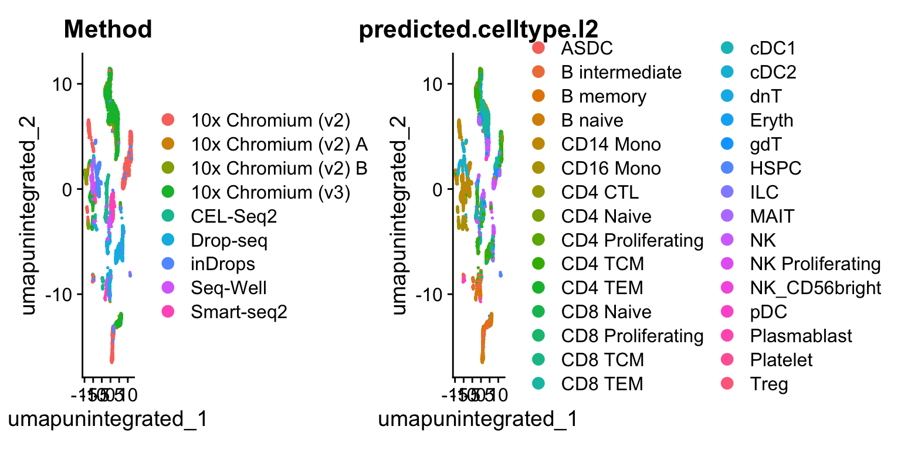
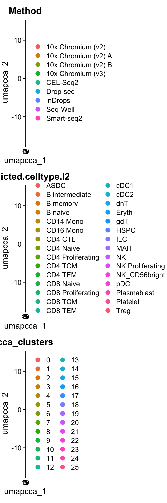

第 5 章 Searat 整合
运用多种计算方法整合 scRNA-Seq 数据集。
library(Seurat)
library(SeuratData)
library(SeuratWrappers)
library(Azimuth)
library(ggplot2)
library(patchwork)
options(future.globals.maxSize = 1e9)单细胞测序数据集的整合，例如跨实验批次、供体或条件的整合，通常是 scRNA-seq 工作流程中的重要步骤。整合分析有助于匹配跨数据集共享的细胞类型和状态，这可以提高统计效力，最重要的是，促进跨数据集的准确比较分析。在 Seurat 的早期版本中，我们引入了包括基于“锚点”的整合工作流在内的整合分析方法。许多实验室也发表了强大且开创性的整合分析方法，如 Harmony 和 scVI。我们认识到，虽然匹配跨数据集共享细胞类型的目标对许多问题可能很重要，但用户可能也会关心使用哪种方法，或者担心整合可能导致生物分辨率的损失。在 Seurat v5 中，我们引入了更灵活和简化的基础设施，只需一行代码即可运行不同的整合算法。这使得探索不同整合方法的结果变得更加容易，并将这些结果与排除整合步骤的工作流程进行比较。 在本教程中，我们使用了一个人类外周血单个核细胞（PBMC）数据集，该数据集通过七种不同技术进行基因表达分析，源自一项系统性比较研究（ pbmcsca ）。数据可通过我们的 SeuratData 包获取。
5.1 Seurat v5 对象中的层次结构
Seurat v5 的检测（assays）将数据存储在多个层次中。这些层次可存储原始未标准化的计数数据（ layer='counts' ）、标准化后的数据（layer='data' ）或经过 Z-score 转换/方差稳定的数据（ layer='scale.data' ）。我们可以加载数据、去除低质量细胞，并通过 Azimuth 流程获取预测的细胞注释（这对后续评估整合效果非常有用）。
# 载入 pbmc 系统性比较分析数据集
# SeuratData::InstallData("pbmcsca")
obj <- LoadData("pbmcsca")
obj <- subset(obj, nFeature_RNA > 1000)
obj <- RunAzimuth(obj, reference = "pbmcref")
# 目前，该对象在 RNA 检测中有两层：counts 和 data
obj
## An object of class Seurat
## 33789 features across 10434 samples within 4 assays
## Active assay: RNA (33694 features, 0 variable features)
## 2 layers present: counts, data
## 3 other assays present: prediction.score.celltype.l1, prediction.score.celltype.l2, prediction.score.celltype.l3
## 2 dimensional reductions calculated: integrated_dr, ref.umap查看可用的 Azimuth reference
# 您可以在 SeuratData 中搜索所有可用数据集（重点关注 Azimuth reference）
available_data <- AvailableData()
available_data[grep("Azimuth", available_data[, 3]), 1:3]
## Dataset Version Summary
## adiposeref.SeuratData adiposeref 1.0.0 Azimuth Reference: adipose
## bonemarrowref.SeuratData bonemarrowref 1.0.0 Azimuth Reference: bonemarrow
## fetusref.SeuratData fetusref 1.0.0 Azimuth Reference: fetus
## heartref.SeuratData heartref 1.0.0 Azimuth Reference: heart
## humancortexref.SeuratData humancortexref 1.0.0 Azimuth Reference: humancortex
## kidneyref.SeuratData kidneyref 1.0.2 Azimuth Reference: kidney
## lungref.SeuratData lungref 2.0.0 Azimuth Reference: lung
## mousecortexref.SeuratData mousecortexref 1.0.0 Azimuth Reference: mousecortex
## pancreasref.SeuratData pancreasref 1.0.0 Azimuth Reference: pancreas
## pbmcref.SeuratData pbmcref 1.0.0 Azimuth Reference: pbmc
## tonsilref.SeuratData tonsilref 2.0.0 Azimuth Reference: tonsil该对象包含来自九个不同批次的数据（存储在对象元数据的 Method 列中），代表了七种不同技术。我们的目标是将这些不同批次的数据整合在一起。在 Seurat 的早期版本中，我们需要将数据表示为九个不同的 Seurat 对象。而在使用 Seurat v5 分析时，我们可以将所有数据保留在一个对象中，只需拆分各层即可。拆分后，现在共有 18 层（每个批次对应一个 counts 和 data 层）。我们还可以运行标准的单细胞 RNA 测序分析（即不进行整合）。需要注意的是，由于数据被分层处理，归一化和可变特征的识别是独立为每个批次进行的（系统会自动识别出一组共识可变特征）。
obj[["RNA"]] <- split(obj[["RNA"]], f = obj$Method)
obj
## An object of class Seurat
## 33789 features across 10434 samples within 4 assays
## Active assay: RNA (33694 features, 0 variable features)
## 18 layers present: counts.Smart-seq2, counts.CEL-Seq2, counts.10x_Chromium_v2_A, counts.10x_Chromium_v2_B, counts.10x_Chromium_v3, counts.Drop-seq, counts.Seq-Well, counts.inDrops, counts.10x_Chromium_v2, data.Smart-seq2, data.CEL-Seq2, data.10x_Chromium_v2_A, data.10x_Chromium_v2_B, data.10x_Chromium_v3, data.Drop-seq, data.Seq-Well, data.inDrops, data.10x_Chromium_v2
## 3 other assays present: prediction.score.celltype.l1, prediction.score.celltype.l2, prediction.score.celltype.l3
## 2 dimensional reductions calculated: integrated_dr, ref.umap现在我们可以可视化未进行整合的标准分析结果。注意，细胞既按细胞类型分组，也按基础方法分组。虽然 UMAP 分析仅是对此的可视化呈现，但对该数据集进行聚类将主要得到批次特异性簇。尤其是如果没有先前的细胞类型注释，这将使下游分析变得极具挑战性。
obj <- FindNeighbors(obj, dims = 1:30, reduction = "pca")
obj <- FindClusters(obj, resolution = 2, cluster.name = "unintegrated_clusters")
## Modularity Optimizer version 1.3.0 by Ludo Waltman and Nees Jan van Eck
##
## Number of nodes: 10434
## Number of edges: 412660
##
## Running Louvain algorithm...
## Maximum modularity in 10 random starts: 0.8981
## Number of communities: 48
## Elapsed time: 0 secondsobj <- RunUMAP(obj, dims = 1:30, reduction = "pca", reduction.name = "umap.unintegrated")
# 按批次和细胞类型注释进行可视化 细胞类型注释之前由 Azimuth 添加
DimPlot(obj, reduction = "umap.unintegrated", group.by = c("Method", "predicted.celltype.l2"))
5.2 执行简化（单行）整合分析
Seurat v5 通过使用 IntegrateLayers 函数实现了简化的整合分析流程。该方法目前支持五种整合方法。这些方法均在低维空间执行整合，并返回一个旨在跨批次共嵌共享细胞类型的降维结果（即 integrated.rpca ）。
- 基于锚点的 CCA 整合方法（
method=CCAIntegration）. - 基于锚点的 RPCA 整合方法（
method=RPCAIntegration）.
- Harmony 算法（
method=HarmonyIntegration）.
- FastMNN (
method= FastMNNIntegration) - scVI (
method=scVIIntegration)
请注意，我们基于锚点的 RPCA 整合方法是一种更快且更保守（校正较少）的整合方案。对此方法感兴趣的用户，可以在我们之前的 RPCA 教程中查看更多详细讨论。
您可以在 Seurat 文档中（例如 ?scVIIntegration ）找到每种方法的详细信息及安装前提条件。例如，scVI 整合需要 reticulate （可通过 CRAN 安装 install.packages("reticulate") ）以及 scvi-tools 及其依赖项需在 conda 环境中安装。具体安装说明请参阅此处。
以下每一行代码都执行一次新的整合操作：
obj <- IntegrateLayers(
object = obj, method = CCAIntegration,
orig.reduction = "pca", new.reduction = "integrated.cca",
verbose = FALSE
)obj <- IntegrateLayers(
object = obj, method = RPCAIntegration,
orig.reduction = "pca", new.reduction = "integrated.rpca",
verbose = FALSE
)obj <- IntegrateLayers(
object = obj, method = HarmonyIntegration,
orig.reduction = "pca", new.reduction = "harmony",
verbose = FALSE
)obj <- IntegrateLayers(
object = obj, method = FastMNNIntegration,
new.reduction = "integrated.mnn",
verbose = FALSE
)obj <- IntegrateLayers(
object = obj, method = scVIIntegration,
new.reduction = "integrated.scvi",
conda_env = "../miniconda3/envs/scvi-env",
verbose = FALSE
)对于任何方法，我们现在都可以对数据集进行可视化和聚类。我们以 CCA 整合和 scVI 为例进行展示，但您可以将此应用于任何方法。
obj <- FindNeighbors(obj, reduction = "integrated.cca", dims = 1:30)
obj <- FindClusters(obj, resolution = 2, cluster.name = "cca_clusters")
## Modularity Optimizer version 1.3.0 by Ludo Waltman and Nees Jan van Eck
##
## Number of nodes: 10434
## Number of edges: 617481
##
## Running Louvain algorithm...
## Maximum modularity in 10 random starts: 0.8039
## Number of communities: 26
## Elapsed time: 1 seconds
obj <- RunUMAP(obj, reduction = "integrated.cca", dims = 1:30, reduction.name = "umap.cca")
p1 <- DimPlot(
obj,
reduction = "umap.cca",
group.by = c("Method", "predicted.celltype.l2", "cca_clusters"),
combine = FALSE, label.size = 2
)
wrap_plots(c(p1), ncol = 1, byrow = F)
obj <- FindNeighbors(obj, reduction = "integrated.scvi", dims = 1:30)
obj <- FindClusters(obj, resolution = 2, cluster.name = "scvi_clusters")
obj <- RunUMAP(obj, reduction = "integrated.scvi", dims = 1:30, reduction.name = "umap.scvi")
p2 <- DimPlot(
obj,
reduction = "umap.scvi",
group.by = c("Method", "predicted.celltype.l2", "scvi_clusters"),
combine = FALSE, label.size = 2
)
wrap_plots(c(p1, p2), ncol = 2, byrow = F)我们希望通过简化整合分析的过程，用户能更细致地评估整合数据集中保留的生物学信息。例如，用户可以基于不同聚类方案比较生物标记物的表达情况，或在不同的 UMAP 可视化结果上展示某一方法的聚类方案。
p1 <- VlnPlot(
obj,
features = "rna_CD8A", group.by = "unintegrated_clusters"
) + NoLegend() + ggtitle("CD8A - Unintegrated Clusters")
p2 <- VlnPlot(
obj, "rna_CD8A",
group.by = "cca_clusters"
) + NoLegend() + ggtitle("CD8A - CCA Clusters")
p3 <- VlnPlot(
obj, "rna_CD8A",
group.by = "scvi_clusters"
) + NoLegend() + ggtitle("CD8A - scVI Clusters")
p1 | p2 | p3obj <- RunUMAP(obj, reduction = "integrated.rpca", dims = 1:30, reduction.name = "umap.rpca")
p4 <- DimPlot(obj, reduction = "umap.unintegrated", group.by = c("cca_clusters"))
p5 <- DimPlot(obj, reduction = "umap.rpca", group.by = c("cca_clusters"))
p6 <- DimPlot(obj, reduction = "umap.scvi", group.by = c("cca_clusters"))
p4 | p5 | p6一旦整合分析完成，你可以重新合并图层——这将把各个数据集合并在一起并重建原始的 counts 和 data 图层。在进行任何差异表达分析之前，你需要完成这一步骤。不过，如果你想重新进行整合分析，随时可以再次拆分这些图层。
obj <- JoinLayers(obj)
obj
## An object of class Seurat
## 33789 features across 10434 samples within 4 assays
## Active assay: RNA (33694 features, 2000 variable features)
## 3 layers present: data, counts, scale.data
## 3 other assays present: prediction.score.celltype.l1, prediction.score.celltype.l2, prediction.score.celltype.l3
## 6 dimensional reductions calculated: integrated_dr, ref.umap, pca, umap.unintegrated, integrated.cca, umap.cca最后，用户还可以使用 sctransform 归一化数据进行整合（更多信息请参阅我们的 SCTransform vignette），首先运行 SCTransform 归一化，然后在 IntegrateLayers 中设置 normalization.method 参数。
options(future.globals.maxSize = 3e+09)
obj <- SCTransform(obj)
obj <- RunPCA(obj, npcs = 30, verbose = F)
obj <- IntegrateLayers(
object = obj,
method = RPCAIntegration,
normalization.method = "SCT",
verbose = F
)
obj <- FindNeighbors(obj, dims = 1:30, reduction = "integrated.dr")
obj <- FindClusters(obj, resolution = 2)